Topic 1.2 - Database Systems¶
Unit 1 - Database System Concepts¶
Database Key Terminology:

Database System Demonstration:
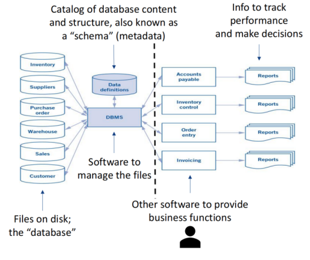
Unit 2 - Entity Relationships Database¶
1.Relational Database & DBMS¶
Relational DBMS enforces how data is stored and structures the based on business rules, through:
- Unique fields (PK) to identify entity
- Referencing fields (FK) to describe entity relationships
- Required fields
- Data type, size, and range
Relational DBMS Key Terminology:

Reasons for Using Relational Database:
- Better define the structure to enhance meaning, reduce redundancy, and improve data quality
- Provide standardized interface (SQL) for defining, creating, modifying and retrieving data
- Provide ease of access to data
- Provide security controls and safeguard against loss and theft of data
- Help maintain audit trails
- Provide an integrated, enterprise-wide data repository as the single source of record
2.Normalization¶
Normalization: Dividing One Big Table to Multiple Tables
- Normalization is the process of separating a single table into its many related component tables
- Normalized schema is the resulting schema with multiple related component tables
- Modern design of normalized schema is designed and documented using ERD
Demonstration: Relational Database: Normalization

3. Primary Keys & Foreign Keys¶
(1) Key¶
Key: A field or a set of fields that uniquely identifies a record
(2) Primary Key & Alternative Key¶
Primary Key & Alternate Keys
- Defined as part of the metadata
- Create rules that the database will enforce to ensure uniqueness
Primary Key (PK): Key we have chosen to uniquely identify each record of a table
-
Primary keys must:
- Have unique & known values
- Cannot change over time
- Should involve the fewest number of fields as possible
-
Natural Key vs Surrogate Key
- Natural Key: selected from known facts
- Surrogate Key: invented or designed for the database
Alternative Key (AK): Keys other than primary key
(3) Foreign Key¶
Foreign key (FK): Non-key field in a table that references the primary key of another table
- Foreign keys facilitate relationships between tables
-
DBMS will preserve and enforce the validity of the linked values
For example: A refer B:
- Cannot insert or update a record in A with a foreign key that does not exist in B
- Cannot delete a record in the B, unless all the records referencing it are deleted from A
Demonstration: Primary Keys & Foreign Keys
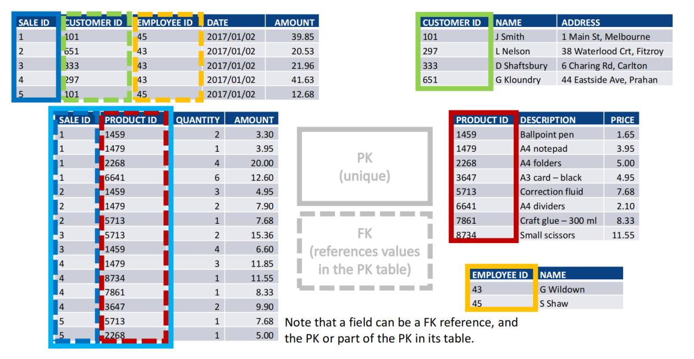
4.Entity-Relationship Diagram (ERD)¶
(1) ERD Concepts¶
Definition of ERD: A semantic, graphical data model about how stored information is structured
- Design and document database schema
- Picture characteristics and relationships of entities (people, places, objects, events, concepts)
- Expresses business rules as defined by the structure of the database
Reasons for using ERD: Provides documentation about the database
- ERD is a technology independent tool for business people and IT people to communicate
- ERD can results in a normalized schema if designed properly - revising poorly structured databases after software written or data recorded wastes time money
(2) Cardinality¶
Cardinality: Numerical relationship between occurrences of one entity and occurrences of the other
Unidirectional Relationship
-
Maximum Cardinality: maximum number of relationships occurrences
- Maximum One
- Maximum Many
-
Minimum Cardinality: minimum number relationship relationships occurrence
- Minimum Zero (Optional)
- Minimum One (Required)
-
Crow’s foot notation
- In Theory:

- In Practice:

Bidirectional Relationship
1. One-To-One:
- One Required & One Optional: PK of required side becomes FK on optional side
- Two Required: FK can be on either side
- Two Optional: FK can be on either side
Demonstration: One-To-One Relationship
One Required & One Optional
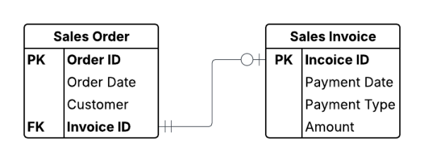
Two Required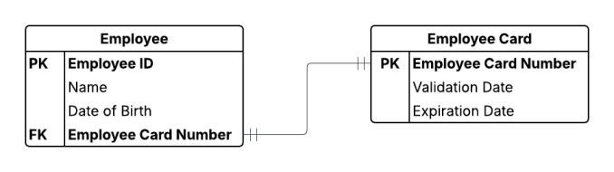
Two Optional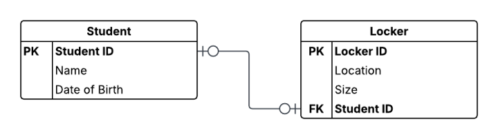
2. One-To-Many:
- PK on the ‘one’ side becomes a FK on the ‘many side’
- PK is always on the ‘one side’ & FK is always on the ‘many side’
Demonstration: One-To-Many Relationship

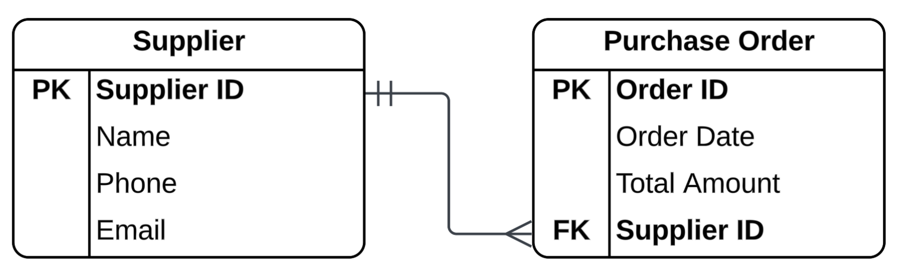
3. Many-To-Many:
- Must be divided to two One-To-Many relationships through associative entity
- The PKs of the two related entities become the combined PKs of the associated entity
Demonstration: Many-To-Many Relationship

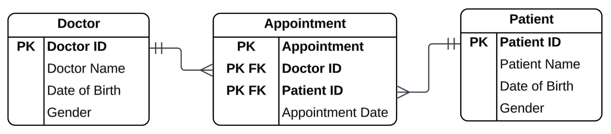
4. Special Relationships
(a) Unary Relationships: an entity can refer itself
Demonstration: Unary Relationship
Unary One-To-One
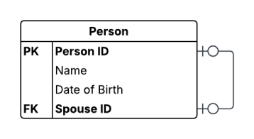
Unary One-To-Many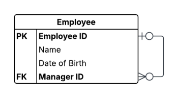
Unary Many-To-Many (through an associative entity)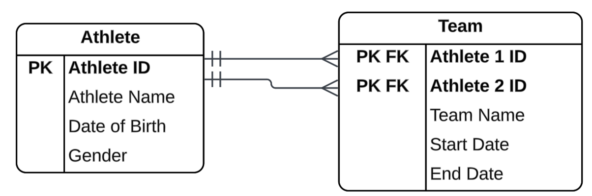
(b) Referencing with Multiple Foreign Keys to Same Table
Demonstration: Referencing with Multiple Foreign Keys to Same Table
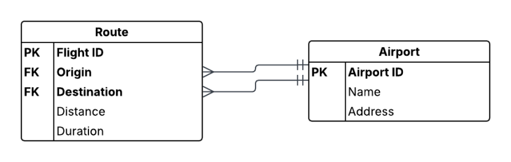
(c) One-To-One or One-To-Many using Association Entity
Demonstration: One-To-One or One-To-Many using Association Entity
One-To-One using Association Entity
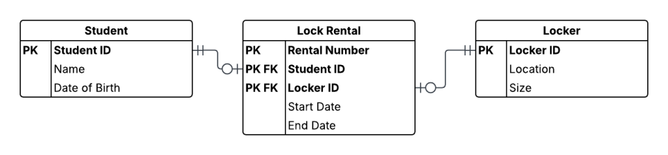
One-To-Many using Association Entity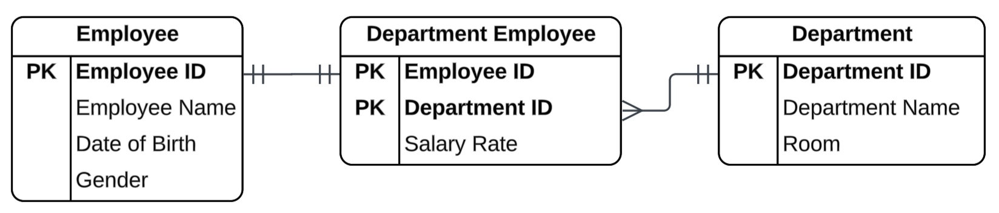
(d) Ternary Relationship: Many-To-Many among three entities through association entity
Demonstration: Ternary Relationship
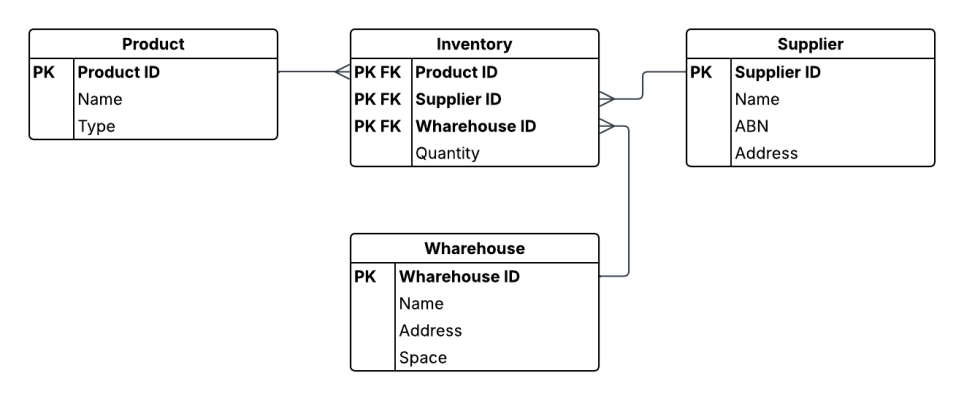
(3) ERD Design¶
(a) ERD Models
ERD Models:
-
Conceptual Model: Overall Scope
- Include general entities
- Include high-level relationships
-
Logical Model: General ERD
- Specify operational and transactional data entities
- Include fields for each entity are identified
- Identify keys, primary keys, and foreign keys for each entity
-
Physical Model: Specific ERD (ready for implementation)
- Map entities to database tables
- Specific data types and sizes of each field
Reasons for Classifying ERD Models
- Design and document data models at different levels of abstraction
- Different audiences have different needs for different levels of detail (managers, analyst, IT)
- Good modelling process starts at the highest level of abstraction (conceptual) and work down towards the detail (logical & physical)
(b) Technical Consideration vs Business Consideration
The structure and logic of the database enforce the model of database:
- Choice of entities, attributes, relationships and associated cardinalities
- Modeling correctly when designing the database is important
- Subsequent changes can be risky and costly, which may introduce other problems
Key consideration: model should support the operating and reporting needs of the organization
- This is not a technical issue, while there are technical aspects
- This is a business issue and essential to the business
- This should be made with active involvement from people who understand the business